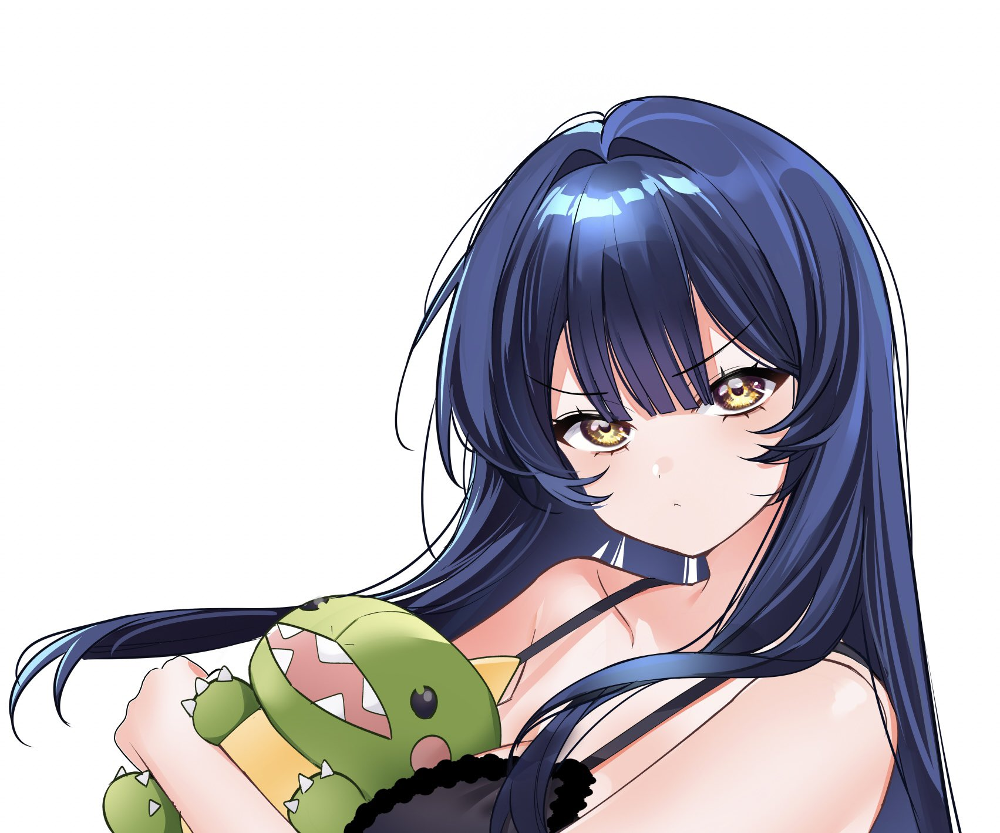

Toque para abrir›
Leitor interativo de mangá
Como Ninar a Rainha da Lua
月の女王の寝かしつけかた
Uma biblioteca pessoal com páginas em japonês e traduções interativas em português. Toque nos textos do mangá para revelar tradução, rōmaji e notas de contexto.
8capítulos/partes na biblioteca
47páginas interativas já prontas
藤高つむりFujitaka Tsumuri · autor